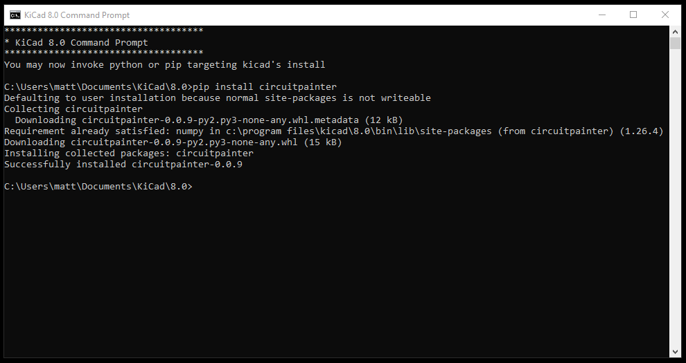

Installation
Windows
For Windows, first download and install KiCad. The latest stable release of version 8 is recommended, and the default options are fine.
During the installation, KiCad will make a Start Menu shortcut for the ‘KiCad 8.0 Command Prompt’:
{kind=link}
Run this, and you’ll be presented with a command prompt that is fully configured to work with KiCad. From here, you can install CircuitPainter using Pip:
pip install circuitpainter
{kind=link}
Next, you can run python:
python

and then type this into the Python terminal, to create an empty board and show that it’s working:
from circuitpainter import CircuitPainter p = CircuitPainter() p.preview()
{kind=link}
If everything was set up correctly, you should PCB Editor window pop up, showing the blank board:

Close the PCB editor, then type exit() into the Python prompt to close it:
exit()

Now, CircuitPainter is set up in the KiCad Command prompt. You can use this Python shell to run CircuitPainter scripts, or interact directly with the Python REPL. The installation is permanent, so you don’t need to do the install steps the next time you want to run CircuitPainter- just open the KiCad Commadn Prompt, and you are good to go.
Note that if you upgrade KiCad, there is a chance that it will update the version of Python that it shipped with. In that case, you will need to do the installation process again.
Linux
For Linux, first install KiCad using the instructions for your distro. The latest stable release of version 8 is recommended. Note: these instructions were tested with Ubuntu 24.04, and may need to be adjusted based on the distribution that you’re running. In particular, the flatpack install might be difficult to get working with Circuitpainter.
In addition to KiCad, you may also need to install python-venv. For Ubuntu:
sudo apt install python3-venv
Once KiCad is installed, open a Terminal window, and create a new directory to work in:
mkdir circuitpainter && cd "$_"
{kind=link}
Next, set up a Python virtual environment, and activate it. Note that you need to use the option ‘–system-site-packages’, so that Circuit Painter can find the version of KiCad installed by your package manager:
python3 -m venv –system-site-packages venv . venv/bin/activate
{kind=link}
From here, you can install CircuitPainter using Pip:
pip install circuitpainter
{kind=link}
Next, you can run python:
python
{kind=link}
and then type this into the Python terminal, to create an empty board and show that it’s working:
from circuitpainter import CircuitPainter p = CircuitPainter() p.preview()
{kind=link}
If everything was set up correctly, you should PCB Editor window pop up, showing the blank board:

Close the PCB editor, then type exit() into the Python prompt to close it:
exit()
{kind=link}
Now, you have a working CircuitPainter installation. To start it again next time, just open a new terminal window, change to the ‘circuitpainter’ directory that you created, and type in ‘. venv/bin/activate’ to enable the virtual environment.
Note that if you upgrade KiCad, there is a chance that it will update the version of Python that it shipped with. In that case, you will need to do the installation process again.
macOS
Unfortunately, the situation on macOS seems to be more complex- the way that KiCad is bundled appears to make it difficult to install packages into the Python environment that ships with KiCad. If you have experience with this, please let us know how to set it up.